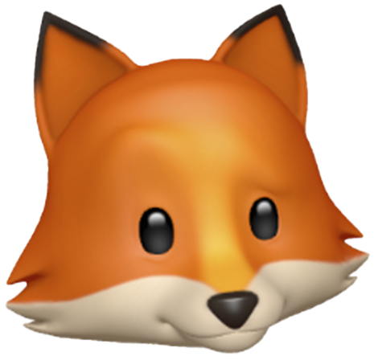

Обо мне:
С малых лет я чувствовала себя взрослей, чем мои ровесники, пока они думали: "За что мне это?", я думала:" Для чего мне это?". С подросткового возраста я начала неосознанно анализировать поведение людей и даже во взрослых людях видеть их детское "я", за собой я замечаю эмоциональные всплески и стараюсь контролировать их, когда ко мне приходят с просьбой дать совет, я вспоминаю свои действия, поговорив с человеком, я думаю, что лучше для него и даю совет личного характера. Можно сказать, что я родилась с призванием быть психологом.
Старый инстинкт мы обычно наблюдаем у животных, а чем отличаются люди от них, которые не имеют своего мнения и делаю то, что хотят от них другие?
- Ульяна